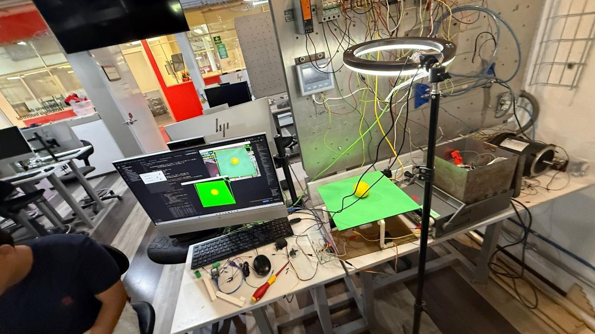

Proyecto Final de Semestre: Plataforma de Balance de Pelota (Ball Balancing Platform)
Introducción
Este proyecto se centró en el diseño e implementación de un sistema de control de posición en tiempo real de dos grados de libertad (2 DOF). El objetivo fue construir una plataforma dinámica capaz de mantener una pelota centrada sobre su superficie, contrarrestando activamente la fuerza de gravedad mediante la inclinación controlada de la base.
El sistema emplea una arquitectura avanzada que combina Visión por Computadora (Python/OpenCV) para la detección de errores y el microcontrolador ESP32 para la ejecución precisa del movimiento a través de servomotores.
Marco Teórico y Arquitectura del Sistema
El proyecto se sustenta en tres pilares tecnológicos que trabajan en un lazo de control cerrado (closed-loop):
1. Visión por Computadora y Detección de Posición
Se utilizó Python junto con OpenCV para capturar el stream de video, actuando como el sensor de posición del sistema.
- Procesamiento: El código identifica la Pelota (Amarilla) y la Plataforma (Verde) usando segmentación HSV y morfología.
- Error de Posición: El Error se calcula como la diferencia en píxeles entre la posición actual de la pelota y el centro de la plataforma detectada. Este error es la entrada principal para el algoritmo de control.
- Detección Dual: Se implementó una detección de dos objetos simultánea para calcular el error con respecto al centro de la plataforma, haciendo el sistema más robusto.
2. Protocolo de Comunicación Serial Inalámbrica
Para la transmisión de datos, se empleó la comunicación Bluetooth Serial entre la PC (Python) y el hardware (ESP32).
- Función: Garantiza una conexión inalámbrica de baja latencia necesaria para tareas de control en tiempo real.
- Mensaje: El código Python calcula los ángulos de corrección y los envía como una cadena de texto en el formato
X,Y\nal ESP32.
3. Control de Inclinación y Algoritmo PID
Los servomotores fueron elegidos como actuadores por su capacidad de posicionamiento angular preciso.
- Actuación: El ESP32 recibe los valores angulares y mueve los dos servomotores que controlan los ejes de inclinación X y Y de la plataforma.
- Algoritmo PID (Proporcional-Integral-Derivativo): La lógica de Python utiliza el PID para convertir el error de posición (píxeles) en una magnitud de corrección (ángulo). El objetivo es que, si la pelota se mueve en la dirección X positiva, la plataforma se incline en la dirección X negativa para corregir el movimiento.
Procedimiento e Implementación
Materiales Clave
| Componente | Función |
|---|---|
| Microcontrolador | ESP32 DevKit V (Con Bluetooth Integrado) |
| Actuadores | 2 Servomotores (Ejes X y Y) |
| Sensor | Cámara Webcam USB (Fuente de visión) |
| Control | Python (OpenCV, NumPy, Serial) |
| Firmware | Arduino IDE (ESP32Servo, BluetoothSerial) |
Lógica de Control en Python
El script implementa una lógica avanzada para la estabilidad:
| Componente | Kp/Ki/Kd Ajustados | Función en el Control |
|---|---|---|
| PID | Kp=0.15, Ki=0.001, Kd=0.20 | Convierte el Error (píxeles) en un output de corrección continuo. |
Suavizado (smoothing=0.3) |
Media Móvil Exponencial. | Filtra el ruido de la cámara y evita movimientos bruscos en el servo. |
Zona Muerta (DEAD_ZONE=15) |
±15 píxeles. | Define una zona central de tolerancia donde no se aplica corrección para prevenir oscilaciones. |
Limitación (constrain) |
Rango 0° a 110°. | Asegura que el ángulo del servo permanezca en un rango físico seguro. |
Código Python (Fragmento de Control)
#PruebaBUENA - Modificado: Pelota AMARILLA y Plataforma VERDE
import cv2
import time
import numpy as np
import serial
import serial.tools.list_ports
# ------------------- Configuración Serial Bluetooth -------------------
esp32_port = 'COM14'
baud_rate = 115200
print("=" * 50)
print("Intentando conectar con ESP32...")
print(f"Puerto: {esp32_port} | Baudios: {baud_rate}")
def listar_puertos():
puertos = serial.tools.list_ports.comports()
print("\n Puertos COM disponibles:")
if len(puertos) == 0:
print(" No se encontraron puertos COM")
for puerto in puertos:
print(f" • {puerto.device}: {puerto.description}")
print()
listar_puertos()
try:
esp32 = serial.Serial(esp32_port, baud_rate, timeout=1)
time.sleep(2)
print(f" ¡Conectado al ESP32 en {esp32_port}!")
except serial.SerialException as e:
print(f" Error de conexión serial: {e}")
esp32 = None
except Exception as e:
print(f" Error inesperado: {e}")
esp32 = None
print("=" * 50)
# ------------------- Configuración cámara -------------------
cap = cv2.VideoCapture(1)
cap.set(cv2.CAP_PROP_FRAME_WIDTH, 640)
cap.set(cv2.CAP_PROP_FRAME_HEIGHT, 480)
if not cap.isOpened():
print("Error: No se pudo abrir la cámara")
exit()
# ------------------- Posición inicial servos -------------------
center_angle = 90
current_x = center_angle
current_y = center_angle
DEAD_ZONE = 15 # Zona muerta reducida
smoothing = 0.3 # Suavizado reducido para respuesta más rápida
# ------------------- Parámetros PID ajustables -------------------
Kp = 0.15
Ki = 0.001
Kd = 0.20
prev_error_x = 0
prev_error_y = 0
integral_x = 0
integral_y = 0
MAX_INTEGRAL = 50
# ------------------- Parámetros de detección -------------------
# Rango HSV para plataforma VERDE (modificado)
LOW_GREEN = np.array([35, 40, 40]) # H: 35-85 (verde), S: mínimo 40, V: mínimo 40
HIGH_GREEN = np.array([85, 255, 255]) # Rango amplio para captar diferentes tonos de verde
AREA_MIN_PLATAFORMA = 1000 # Área mínima del cuadrado
# Rango HSV para pelota AMARILLA (modificado)
LOW_YELLOW = np.array([20, 100, 100]) # H: 20-35 (amarillo), S: mínimo 100, V: mínimo 100
HIGH_YELLOW = np.array([35, 255, 255]) # Cubre tonos amarillos brillantes
AREA_MIN_PELOTA = 200
RADIO_MIN_PELOTA = 8
# ------------------- Función para limitar valores -------------------
def constrain(value, min_val, max_val):
return max(min_val, min(max_val, value))
# ------------------- Callbacks para sliders -------------------
def update_kp(val):
global Kp
Kp = val / 100.0 # Slider 0-100, valor real 0.00-1.00
print(f"Kp = {Kp:.3f}")
def update_ki(val):
global Ki
Ki = val / 1000.0 # Slider 0-100, valor real 0.000-0.100
print(f"Ki = {Ki:.4f}")
def update_kd(val):
global Kd
Kd = val / 100.0 # Slider 0-100, valor real 0.00-1.00
print(f"Kd = {Kd:.3f}")
# ------------------- Crear ventana de control -------------------
cv2.namedWindow('Control PID')
cv2.createTrackbar('Kp x100', 'Control PID', int(Kp * 100), 100, update_kp)
cv2.createTrackbar('Ki x1000', 'Control PID', int(Ki * 1000), 100, update_ki)
cv2.createTrackbar('Kd x100', 'Control PID', int(Kd * 100), 100, update_kd)
prev_time = time.time()
print("=" * 50)
print("Sistema de Balance: Plataforma VERDE + Pelota AMARILLA")
print("=" * 50)
print("CONFIGURACIÓN:")
print(f" • Centro servos: {center_angle}° (Rango: 0-180°)")
print(f" • Zona muerta: ±{DEAD_ZONE} píxeles")
print(f" • Suavizado: {smoothing}")
print(f" • PID: Kp={Kp} Ki={Ki} Kd={Kd}")
print("\nDETECCIÓN:")
print(" • PLATAFORMA VERDE (HSV): Detecta área más grande de tonos verdes")
print(f" Rango H: {LOW_GREEN[0]}-{HIGH_GREEN[0]} | S: {LOW_GREEN[1]}-{HIGH_GREEN[1]} | V: {LOW_GREEN[2]}-{HIGH_GREEN[2]}")
print(" • PELOTA AMARILLA: Posición para calcular error")
print(f" Rango H: {LOW_YELLOW[0]}-{HIGH_YELLOW[0]} | S: {LOW_YELLOW[1]}-{HIGH_YELLOW[1]} | V: {LOW_YELLOW[2]}-{HIGH_YELLOW[2]}")
print("\nCONTROLES:")
print(" • 'q' → Salir")
print(" • 'c' → Resetear integrales")
print(" • Sliders → Ajustar PID en tiempo real")
print("=" * 50)
frame_count = 0
fps_time = time.time()
fps = 0
while True:
ret, frame = cap.read()
if not ret:
print("Error: No se pudo leer frame de la cámara")
break
frame = cv2.flip(frame, 1)
height, width = frame.shape[:2]
centrox, centroy = width//2, height//2
# ===============================================================
# DETECCIÓN 1: PLATAFORMA VERDE (HSV) - ÁREA MÁS GRANDE
# ===============================================================
hsv_plat = cv2.cvtColor(frame, cv2.COLOR_BGR2HSV)
# Máscara para detectar verde
mask_plataforma = cv2.inRange(hsv_plat, LOW_GREEN, HIGH_GREEN)
kernel_plat = np.ones((7,7), np.uint8)
mask_plataforma = cv2.morphologyEx(mask_plataforma, cv2.MORPH_CLOSE, kernel_plat)
mask_plataforma = cv2.morphologyEx(mask_plataforma, cv2.MORPH_OPEN, kernel_plat)
mask_plataforma = cv2.dilate(mask_plataforma, kernel_plat, iterations=1)
contours_plat, _ = cv2.findContours(mask_plataforma, cv2.RETR_EXTERNAL, cv2.CHAIN_APPROX_SIMPLE)
area_max_plat = 0
contorno_plat = None
centro_plataforma = None
rectangulo_info = None
for c in contours_plat:
area = cv2.contourArea(c)
if area > area_max_plat and area > AREA_MIN_PLATAFORMA:
area_max_plat = area
contorno_plat = c
rectangulo_info = cv2.minAreaRect(c)
M = cv2.moments(c)
if M["m00"] != 0:
cx_plat = int(M["m10"] / M["m00"])
cy_plat = int(M["m01"] / M["m00"])
centro_plataforma = (cx_plat, cy_plat)
# ===============================================================
# DETECCIÓN 2: PELOTA AMARILLA
# ===============================================================
hsv = cv2.cvtColor(frame, cv2.COLOR_BGR2HSV)
mask_pelota = cv2.inRange(hsv, LOW_YELLOW, HIGH_YELLOW)
kernel_pelota = np.ones((5,5), np.uint8)
mask_pelota = cv2.morphologyEx(mask_pelota, cv2.MORPH_OPEN, kernel_pelota)
mask_pelota = cv2.morphologyEx(mask_pelota, cv2.MORPH_CLOSE, kernel_pelota)
mask_pelota = cv2.dilate(mask_pelota, kernel_pelota, iterations=1)
contours_pelota, _ = cv2.findContours(mask_pelota, cv2.RETR_EXTERNAL, cv2.CHAIN_APPROX_SIMPLE)
area_max_pelota = 0
contorno_pelota = None
centro_pelota = None
radio_pelota = 0
for c in contours_pelota:
area = cv2.contourArea(c)
if area > area_max_pelota:
area_max_pelota = area
contorno_pelota = c
(x_pel, y_pel), radio_pelota = cv2.minEnclosingCircle(c)
if radio_pelota > RADIO_MIN_PELOTA and area > AREA_MIN_PELOTA:
centro_pelota = (int(x_pel), int(y_pel))
# ===============================================================
# VISUALIZACIÓN
# ===============================================================
out_original = frame.copy()
mask_combinada = cv2.bitwise_or(mask_plataforma, mask_pelota)
out_deteccion = cv2.cvtColor(mask_combinada, cv2.COLOR_GRAY2BGR)
# Verde para plataforma, Amarillo para pelota
out_deteccion[mask_plataforma > 0] = [0, 255, 0] # Verde
out_deteccion[mask_pelota > 0] = [0, 255, 255] # Amarillo (BGR: cyan visualmente amarillo en HSV)
# ===============================================================
# CALCULAR TIEMPO
# ===============================================================
current_time = time.time()
dt = current_time - prev_time
prev_time = current_time
if dt < 0.001:
dt = 0.001
# ===============================================================
# CONTROL PID
# ===============================================================
plataforma_detectada = (contorno_plat is not None and area_max_plat > AREA_MIN_PLATAFORMA and centro_plataforma is not None)
pelota_detectada = (contorno_pelota is not None and centro_pelota is not None)
if plataforma_detectada:
if rectangulo_info:
box = cv2.boxPoints(rectangulo_info)
box = np.intp(box)
cv2.drawContours(out_original, [box], 0, (0, 255, 0), 3)
cv2.drawContours(out_deteccion, [box], 0, (0, 255, 0), 2)
cv2.circle(out_original, centro_plataforma, 12, (0, 255, 0), 3)
cv2.circle(out_original, centro_plataforma, 5, (0, 255, 0), -1)
cv2.putText(out_original, "PLATAFORMA", (centro_plataforma[0]-40, centro_plataforma[1]-20),
cv2.FONT_HERSHEY_SIMPLEX, 0.5, (0, 255, 0), 2)
if pelota_detectada:
cv2.circle(out_original, centro_pelota, int(radio_pelota), (0, 255, 255), 2)
cv2.circle(out_original, centro_pelota, 5, (0, 255, 255), -1)
cv2.putText(out_original, "PELOTA", (centro_pelota[0]-30, centro_pelota[1]+25),
cv2.FONT_HERSHEY_SIMPLEX, 0.5, (0, 255, 255), 2)
cv2.line(out_original, centro_plataforma, centro_pelota, (0, 255, 255), 2)
cv2.line(out_deteccion, centro_plataforma, centro_pelota, (255, 255, 255), 2)
# ===============================================================
# CALCULAR ERROR: Pelota respecto al centro de la plataforma
# ===============================================================
error_x = -(centro_pelota[0] - centro_plataforma[0])
error_y = (centro_pelota[1] - centro_plataforma[1])
if abs(error_x) < DEAD_ZONE:
error_x = 0
if abs(error_y) < DEAD_ZONE:
error_y = 0
integral_x += error_x * dt
integral_y += error_y * dt
integral_x = constrain(integral_x, -MAX_INTEGRAL, MAX_INTEGRAL)
integral_y = constrain(integral_y, -MAX_INTEGRAL, MAX_INTEGRAL)
derivative_x = (error_x - prev_error_x) / dt
derivative_y = (error_y - prev_error_y) / dt
output_x = Kp*error_x + Ki*integral_x + Kd*derivative_x
output_y = Kp*error_y + Ki*integral_y + Kd*derivative_y
prev_error_x = error_x
prev_error_y = error_y
delta_x = output_x * 0.15
delta_y = output_y * 0.15
target_x = center_angle + delta_x
target_y = center_angle + delta_y
current_x = current_x * (1 - smoothing) + target_x * smoothing
current_y = current_y * (1 - smoothing) + target_y * smoothing
current_x = constrain(current_x, 0, 110)
current_y = constrain(current_y, 0, 110)
if esp32:
mensaje = f"{int(current_x)},{int(current_y)}\n"
try:
esp32.write(mensaje.encode())
if esp32.in_waiting > 0:
respuesta = esp32.readline().decode('utf-8', errors='ignore').strip()
if respuesta and frame_count % 30 == 0:
print(f" ESP32: {respuesta}")
except Exception as e:
if frame_count % 30 == 0:
print(f"✗ Error: {e}")
if frame_count % 5 == 0:
print(f"✓ X={int(current_x):3d}° Y={int(current_y):3d}° | Err X={-error_x:4d} Y={-error_y:4d} | Out X={output_x:6.1f} Y={output_y:6.1f}")
cv2.putText(out_original, f"Error X:{-error_x} Y:{-error_y}", (10,30),
cv2.FONT_HERSHEY_SIMPLEX, 0.6, (255,255,0), 2)
cv2.putText(out_original, f"Servo X:{int(current_x)} Y:{int(current_y)}", (10,60),
cv2.FONT_HERSHEY_SIMPLEX, 0.6, (255,255,0), 2)
cv2.putText(out_original, f"Distancia: {int(np.sqrt(error_x**2 + error_y**2))} px", (10,90),
cv2.FONT_HERSHEY_SIMPLEX, 0.5, (0,255,255), 2)
else:
cv2.putText(out_original, "PELOTA NO DETECTADA", (10,30),
cv2.FONT_HERSHEY_SIMPLEX, 0.7, (0,165,255), 2)
integral_x = 0
integral_y = 0
prev_error_x = 0
prev_error_y = 0
current_x = current_x * (1 - smoothing*0.5) + center_angle * smoothing * 0.5
current_y = current_y * (1 - smoothing*0.5) + center_angle * smoothing * 0.5
if esp32 and frame_count % 10 == 0:
try:
esp32.write(f"{int(current_x)},{int(current_y)}\n".encode())
except:
pass
if frame_count % 30 == 0:
print(f"⚠ Solo plataforma. Centrando: X={int(current_x)}° Y={int(current_y)}°")
else:
cv2.putText(out_original, "PLATAFORMA NO DETECTADA", (10,30),
cv2.FONT_HERSHEY_SIMPLEX, 0.7, (0,0,255), 2)
integral_x = 0
integral_y = 0
prev_error_x = 0
prev_error_y = 0
current_x = current_x * (1 - smoothing*0.5) + center_angle * smoothing * 0.5
current_y = current_y * (1 - smoothing*0.5) + center_angle * smoothing * 0.5
if esp32 and frame_count % 10 == 0:
try:
esp32.write(f"{int(current_x)},{int(current_y)}\n".encode())
except:
pass
if frame_count % 30 == 0:
print(f"⚠ Sin detección. Centrando: X={int(current_x)}° Y={int(current_y)}°")
cv2.circle(out_original, (centrox, centroy), DEAD_ZONE, (128,128,128), 1)
cv2.line(out_original, (centrox-15, centroy), (centrox+15, centroy), (128,128,128), 1)
cv2.line(out_original, (centrox, centroy-15), (centrox, centroy+15), (128,128,128), 1)
cv2.putText(out_original, f"Plat:{int(area_max_plat)} Pel:{int(area_max_pelota)}", (10,height-40),
cv2.FONT_HERSHEY_SIMPLEX, 0.5, (200,200,200), 1)
cv2.putText(out_original, f"PID: Kp={Kp:.2f} Ki={Ki:.3f} Kd={Kd:.2f}", (10,120),
cv2.FONT_HERSHEY_SIMPLEX, 0.5, (255,200,0), 2)
frame_count += 1
if time.time() - fps_time > 1.0:
fps = frame_count
frame_count = 0
fps_time = time.time()
cv2.putText(out_original, f"FPS: {fps}", (width-100, 30),
cv2.FONT_HERSHEY_SIMPLEX, 0.6, (0,255,0), 2)
cv2.imshow("Sistema de Balance - Original", out_original)
cv2.imshow("Deteccion: Plataforma(Verde) + Pelota(Amarillo)", out_deteccion)
key = cv2.waitKey(1) & 0xFF
if key == ord('q'):
break
elif key == ord('c'):
integral_x = 0
integral_y = 0
print("Integrales reseteadas")
print("\nCerrando sistema...")
cap.release()
if esp32:
esp32.write(f"{center_angle},{center_angle}\n".encode())
time.sleep(0.1)
esp32.close()
print("Conexión serial cerrada")
cv2.destroyAllWindows()
print("Sistema finalizado")
Código Arduino (Fragmento de Procesamiento)
#include <ESP32Servo.h>
#include <BluetoothSerial.h>
// =============== CONFIGURACIÓN BLUETOOTH ===============
String device_name = "ESP32-BT-Slave";
BluetoothSerial SerialBT;
// =============== CONFIGURACIÓN DE PINES ===============
const int PIN_SERVO_X = 18;
const int PIN_SERVO_Y = 19;
// =============== CONFIGURACIÓN DE SERVOS ===============
Servo servoX;
Servo servoY;
const int PWM_MIN = 500;
const int PWM_MAX = 2400;
// =============== POSICIÓN INICIAL (CENTRADA) ===============
const int CENTRO = 90;
// =============== VARIABLES DE COMUNICACIÓN ===============
String inputString = "";
bool stringComplete = false;
// =============== VARIABLES DE CONTROL ===============
int posicionX = CENTRO;
int posicionY = CENTRO;
unsigned long ultimoComando = 0;
const unsigned long TIMEOUT = 2000;
// =============== VARIABLES DE DEBUG ===============
unsigned long contadorComandos = 0;
unsigned long ultimoDebug = 0;
const unsigned long INTERVALO_DEBUG = 1000;
// =============== CONFIGURACIÓN INICIAL ===============
void setup() {
// Iniciar Serial USB (para debug)
Serial.begin(115200);
delay(100);
// Iniciar Bluetooth Serial
SerialBT.begin(device_name);
delay(500);
inputString.reserve(20);
// Configurar timers del ESP32
ESP32PWM::allocateTimer(0);
ESP32PWM::allocateTimer(1);
ESP32PWM::allocateTimer(2);
ESP32PWM::allocateTimer(3);
// Configurar servos
servoX.attach(PIN_SERVO_X, PWM_MIN, PWM_MAX);
servoY.attach(PIN_SERVO_Y, PWM_MIN, PWM_MAX);
// Mover a posición inicial (CENTRO)
Serial.println("\n========================================");
Serial.println("Inicializando servos en posicion central...");
servoX.write(CENTRO);
servoY.write(CENTRO);
delay(1000);
Serial.println("Servos centrados!");
// Mensaje de inicio (USB)
Serial.println("========================================");
Serial.println("ESP32 - Sistema de Balance BLUETOOTH");
Serial.println("========================================");
Serial.print("Nombre Bluetooth: ");
Serial.println(device_name);
Serial.print("Servo X en GPIO ");
Serial.println(PIN_SERVO_X);
Serial.print("Servo Y en GPIO ");
Serial.println(PIN_SERVO_Y);
Serial.print("Posicion inicial: ");
Serial.print(CENTRO);
Serial.println(" grados");
Serial.println("========================================");
Serial.println("Esperando conexion Bluetooth...");
Serial.println("========================================\n");
// Mensaje de inicio (Bluetooth)
SerialBT.println("ESP32 Balance System Ready");
SerialBT.println("Servos centrados en 90 grados");
SerialBT.println("Esperando comandos...");
ultimoComando = millis();
ultimoDebug = millis();
}
// =============== BUCLE PRINCIPAL ===============
void loop() {
// Leer datos desde Bluetooth
while (SerialBT.available()) {
char inChar = (char)SerialBT.read();
if (inChar == '\n' || inChar == '\r') {
if (inputString.length() > 0) {
stringComplete = true;
}
} else {
inputString += inChar;
}
}
// Procesar comando si está completo
if (stringComplete) {
procesarComando();
inputString = "";
stringComplete = false;
ultimoComando = millis();
}
// Debug periódico (solo por USB)
if (millis() - ultimoDebug > INTERVALO_DEBUG) {
mostrarEstado();
ultimoDebug = millis();
}
// Timeout - volver al centro si no hay comandos
if (millis() - ultimoComando > TIMEOUT) {
volverAlCentro();
}
}
// =============== FUNCIÓN: PROCESAR COMANDO ===============
void procesarComando() {
contadorComandos++;
// Debug por USB
Serial.print("[BT-CMD #");
Serial.print(contadorComandos);
Serial.print("] '");
Serial.print(inputString);
Serial.print("' -> ");
int comaIndex = inputString.indexOf(',');
if (comaIndex > 0) {
String valorXStr = inputString.substring(0, comaIndex);
String valorYStr = inputString.substring(comaIndex + 1);
int xRecibido = valorXStr.toInt();
int yRecibido = valorYStr.toInt();
// Debug
Serial.print("X=");
Serial.print(xRecibido);
Serial.print(" Y=");
Serial.print(yRecibido);
// Validar y limitar (0-180 grados)
xRecibido = constrain(xRecibido, 0, 180);
yRecibido = constrain(yRecibido, 0, 180);
// Mostrar cambio
if (xRecibido != posicionX || yRecibido != posicionY) {
Serial.print(" | Moviendo: X(");
Serial.print(posicionX);
Serial.print("→");
Serial.print(xRecibido);
Serial.print("°) Y(");
Serial.print(posicionY);
Serial.print("→");
Serial.print(yRecibido);
Serial.println("°)");
} else {
Serial.println(" | Sin cambio");
}
// Actualizar posiciones
posicionX = xRecibido;
posicionY = yRecibido;
// Mover servos a las nuevas posiciones
servoX.write(posicionX);
servoY.write(posicionY);
// Confirmación por Bluetooth a Python
SerialBT.print("OK: ");
SerialBT.print(posicionX);
SerialBT.print(",");
SerialBT.println(posicionY);
} else {
Serial.println("ERROR - Formato invalido");
SerialBT.println("Error: Formato invalido. Use X,Y");
}
}
// =============== FUNCIÓN: MOSTRAR ESTADO ===============
void mostrarEstado() {
if (SerialBT.hasClient()) {
Serial.print("[ESTADO] BT conectado | X=");
} else {
Serial.print("[ESTADO] BT desconectado | X=");
}
Serial.print(posicionX);
Serial.print("° Y=");
Serial.print(posicionY);
Serial.print("° | Cmds: ");
Serial.print(contadorComandos);
Serial.print(" | Sin datos: ");
Serial.print((millis() - ultimoComando) / 1000);
Serial.println("s");
}
// =============== FUNCIÓN: VOLVER AL CENTRO ===============
void volverAlCentro() {
static bool mensajeMostrado = false;
static unsigned long ultimoCentrado = 0;
if (millis() - ultimoCentrado < 500) {
return;
}
ultimoCentrado = millis();
if (posicionX != CENTRO || posicionY != CENTRO) {
if (!mensajeMostrado) {
Serial.println("\n[TIMEOUT] Volviendo al centro...");
SerialBT.println("Timeout: Centrando servos...");
mensajeMostrado = true;
}
// Movimiento gradual al centro
if (posicionX < CENTRO) posicionX += 2;
if (posicionX > CENTRO) posicionX -= 2;
if (posicionY < CENTRO) posicionY += 2;
if (posicionY > CENTRO) posicionY -= 2;
// Ajuste fino
if (abs(posicionX - CENTRO) == 1) posicionX = CENTRO;
if (abs(posicionY - CENTRO) == 1) posicionY = CENTRO;
servoX.write(posicionX);
servoY.write(posicionY);
Serial.print(" Centrando: X=");
Serial.print(posicionX);
Serial.print("° Y=");
Serial.print(posicionY);
Serial.println("°");
} else {
if (mensajeMostrado) {
Serial.println("[CENTRADO] Completo\n");
mensajeMostrado = false;
ultimoComando = millis();
}
}
6. Resultados y Conclusiones del Proyecto Final
6.1. Resultados Clave: Validación de Subsistemas
La validación del proyecto se centró en demostrar el funcionamiento y la integración exitosa de los tres subsistemas principales:
-
Detección y Precisión de la Visión (Subsistema Sensor):
- La Visión por Computadora (Python/OpenCV) calculó el Error de Posición (
x,y) con la precisión necesaria para la tarea de balanceo. - La implementación de la segmentación HSV y la morfología aseguró una detección estable de la pelota y la plataforma, proporcionando datos de entrada confiables para el control.
- La Visión por Computadora (Python/OpenCV) calculó el Error de Posición (
-
Conectividad y Latencia (Subsistema Comunicación):
- Se estableció y mantuvo una conexión Bluetooth estable entre la PC y la ESP32.
- La baja latencia en la transmisión de datos permitió que los comandos de corrección llegaran al microcontrolador a una velocidad suficiente para ejecutar correcciones rápidas y dinámicas de la plataforma, validando la arquitectura PC-ESP32.
-
Control de Posición (Subsistema Actuación):
- El sistema demostró ser capaz de llevar la pelota desde una posición inicial descentrada hacia el punto de equilibrio central (Set-Point).
- El ajuste fino del PID, junto con la Zona Muerta y el Suavizado, logró el objetivo principal: mantener la pelota en equilibrio sobre la plataforma por un tiempo prolongado, contrarrestando las perturbaciones de manera eficiente.
6.2. Conclusión del Proyecto
El proyecto de la Plataforma de Balanceo de Bola demostró la aplicación efectiva de la Ingeniería de Control y la Visión por Computadora en un sistema mecatrónico funcional. Se logró integrar con éxito tres dominios: 1. El procesamiento de alto nivel (Python/OpenCV). 2. La comunicación inalámbrica (Bluetooth). 3. El control de actuadores de precisión (Servomotores/ESP32).
Fotos y videos


